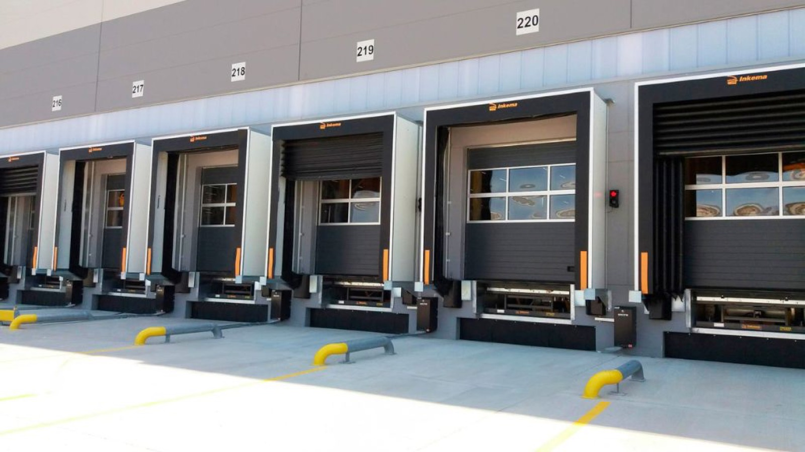
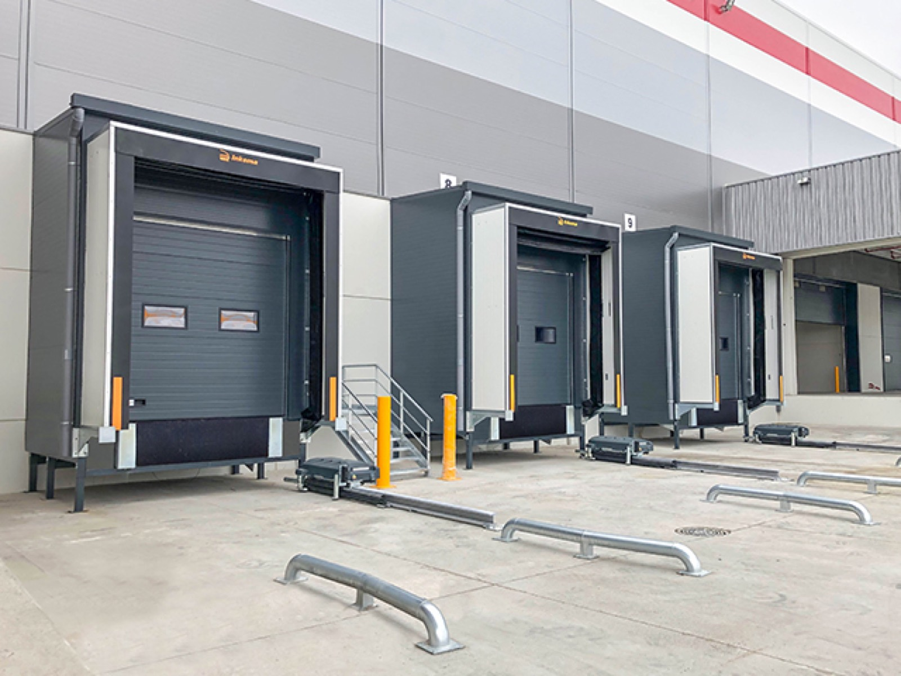

Spis treści (7)
Otwarta brama i podstawiony pojazd to miejsce, przez które magazyn traci ciepło, a do środka trafia deszcz, śnieg i kurz. Kurtyna uszczelniająca zamyka tę szczelinę. Żeby jednak działała przez lata, musi pasować do budynku, pojazdów i rodzaju towaru. W tym poradniku wyjaśniamy, czym różnią się poszczególne typy kurtyn i jak dobrać właściwy do Waszego doku.
Po co doku kurtyna uszczelniająca
Kurtyna uszczelniająca izoluje przestrzeń między dokiem przeładunkowym a zaparkowanym pojazdem. Znacząco ogranicza przepływ powietrza między wnętrzem budynku a otoczeniem. W praktyce daje cztery korzyści:
- mniejsze straty ciepła i realne oszczędności energii, co ma kluczowe znaczenie w obiektach, które muszą utrzymać stabilną temperaturę,
- barierę przed deszczem, śniegiem i wiatrem, a więc suchą i bezpieczniejszą strefę przeładunku,
- ochronę przed wilgocią i zanieczyszczeniami, które inaczej trafiają do magazynu,
- ochronę pojazdu i budynku przed uszkodzeniami w trakcie przeładunku.
Nasze kurtyny wykonujemy z materiałów odpornych na tarcie i uderzenia, niepalnych i niewrażliwych na czynniki atmosferyczne. Materiały są stabilne kolorystycznie, więc nie blakną i nie odbarwiają się.

Jakie typy kurtyn uszczelniających oferujemy
W naszej ofercie są kurtyny:
- licowane z fasadą,
- z dodatkową zabudową doku,
- wysuwane,
- piankowe, w tym specjalnie dostosowane do chłodni,
- pneumatyczne.
Poniżej opisujemy, w jakich sytuacjach zwykle rozważamy każdy z nich. To punkt wyjścia do rozmowy, a nie gotowa recepta: ostateczny typ dobieramy po analizie konkretnego stanowiska.
Kurtyna licowana z fasadą
Montowana bezpośrednio na ścianie budynku, w płaszczyźnie fasady. To rozwiązanie dla doków, w których brama jest osadzona w ścianie zewnętrznej, a pojazd podjeżdża bezpośrednio do budynku. Sprawdza się przy nowych inwestycjach i przy modernizacjach, gdy chcemy uszczelnić dok bez rozbudowy bryły obiektu. NIEZWERYFIKOWANE: zakres zastosowań kurtyny licowanej z fasadą do potwierdzenia z doradcą technicznym Inkema
Kurtyna z dodatkową zabudową doku
Kurtyna montowana razem z dodatkową zabudową doku. NIEZWERYFIKOWANE: konstrukcja zabudowy w tym wariancie, brak opisu w treściach źródłowych Dobrze współgra z domkami przeładunkowymi, które przenoszą powierzchnię załadunku na zewnątrz i zostawiają więcej miejsca wewnątrz budynku. Wjazd do domku warto uzupełnić kurtyną, bo dodatkowo izoluje przestrzeń między pojazdem a obiektem i poprawia komfort oraz bezpieczeństwo pracy.
Kurtyna wysuwana
Kurtyna, którą można wysunąć w stronę pojazdu. Pomaga tam, gdzie podjeżdżają auta o różnych gabarytach albo gdzie odległość pojazdu od budynku nie zawsze jest taka sama. NIEZWERYFIKOWANE: konstrukcja i zakres wysuwu kurtyny wysuwanej Inkema, brak opisu w treściach źródłowych
Kurtyna piankowa
Kurtyna piankowa przylega do tyłu pojazdu i dobrze uszczelnia styk z nadwoziem. W ofercie mamy wersje specjalnie dostosowane do chłodni. To częsty wybór w obiektach, w których liczy się utrzymanie niskiej temperatury i ograniczenie strat chłodu przy każdym otwarciu bramy. Przy kurtynie piankowej szczególnie ważne jest dopasowanie do pojazdów, które faktycznie obsługujecie, bo to ono decyduje o szczelności.
Kurtyna pneumatyczna
Kurtyna pneumatyczna ma najwyższe walory uszczelniające w naszej ofercie. Dlatego to ona wchodzi w skład systemu ciepłego doku Inkema. Wybieramy ją wtedy, gdy szczelność jest priorytetem: w chłodniach, w magazynach z towarem wrażliwym na temperaturę i wilgotność, w obiektach z wysokimi kosztami ogrzewania lub chłodzenia.
Jak dobieramy kurtynę: pięć pytań
Uszczelnienie doku, które ma działać przez wiele lat, musi być precyzyjnie dopasowane. Dlatego każdy typ kurtyny dobieramy indywidualnie. Przed doborem pytamy o:
- Rodzaj towaru. Czy wymaga stałej temperatury, ochrony przed wyziębieniem albo przed wahaniami wilgotności?
- Wielkość i rodzaj pojazdów. Jakie auta realizują dostawy, czy flota jest jednolita, czy zróżnicowana?
- Konstrukcję budynku. Czy brama jest w fasadzie, czy planujecie domek przeładunkowy albo zabudowę doku?
- Intensywność pracy. Ile podstawień dziennie obsługuje stanowisko?
- Pozostałe urządzenia. Jaka rampa lub mostek pracuje na stanowisku i jaka brama zamyka otwór?
Kurtynę często montujemy razem z rampą, także w istniejących obiektach, gdzie stanowisko dopasowujemy bez rozbiórek i przebudów.

Najczęstsze błędy przy wyborze kurtyny
Przy doborze kurtyny warto uniknąć kilku typowych pułapek:
- dobór pod jeden typ pojazdu, podczas gdy w praktyce pod dok podjeżdżają auta o różnych gabarytach,
- wybór najprostszego rozwiązania do obiektu o wysokich wymaganiach termicznych, co później widać w kosztach energii,
- traktowanie kurtyny osobno, bez uwzględnienia rampy, bramy i ewentualnego domku, z którymi musi współpracować,
- brak przeglądów po montażu, przez co drobne uszkodzenia długo pozostają niezauważone.
Każdy z tych błędów da się uniknąć na etapie projektu, jeśli przed wyborem kurtyny spojrzymy na całe stanowisko przeładunkowe. NIEZWERYFIKOWANE: lista typowych błędów oparta na wiedzy ogólnej branży, do potwierdzenia z doradcami Inkema
Kiedy sama kurtyna nie wystarczy: ciepły dok
Standardowy dok chroni strefę przeładunku przed wiatrem, opadami i silnym nasłonecznieniem. Jeśli jednak temperatura w strefie przeładunku ma być taka sama jak w pozostałej części magazynu, potrzebny jest system ciepłego doku. Ciepły dok Inkema jest dodatkowo ocieplony i uszczelniony. Składa się z:
- pneumatycznej kurtyny uszczelniającej,
- termicznie izolowanego domku,
- bramy segmentowej,
- rampy z najazdem teleskopowym lub mostku przeładunkowego, zależnie od potrzeb.
Ciepły dok sprawdza się, gdy produkty trzeba chronić przed podwyższoną temperaturą, na przykład w chłodniach, gdy nie mogą się wyziębić, jak sadzonki roślin, niektóre leki czy materiały budowlane, albo gdy szkodzą im duże wahania wilgotności, jak elektronice.
Jak dbać o kurtynę uszczelniającą
Kurtyna pracuje przy każdym podstawieniu pojazdu, więc z czasem się zużywa. Przetarcia, rozdarcia czy uszkodzenia po uderzeniu obniżają szczelność, zanim ktokolwiek zauważy to na rachunku za energię. Dlatego kurtyny warto objąć regularnymi przeglądami. W ramach umów serwisowych prowadzimy przeglądy według monitorowanego przez nas harmonogramu, określamy stan techniczny urządzeń i rekomendujemy usprawnienia. Serwisujemy także urządzenia innych producentów.
 Produkt InkemaUszczelnienia dokówMniejsze straty ciepła i bariera dla deszczu i wiatru
Produkt InkemaUszczelnienia dokówMniejsze straty ciepła i bariera dla deszczu i wiatru
 Produkt InkemaSystem ciepłego dokuTa sama temperatura w strefie przeładunku co w magazynie
Produkt InkemaSystem ciepłego dokuTa sama temperatura w strefie przeładunku co w magazynie
Najczęstsze pytania
Która kurtyna uszczelniająca jest najszczelniejsza?
W naszej ofercie najwyższe walory uszczelniające ma kurtyna pneumatyczna. Dlatego jest częścią systemu ciepłego doku Inkema.
Czy jest kurtyna do chłodni?
Tak. Oferujemy kurtyny piankowe specjalnie dostosowane do chłodni, a przy najwyższych wymaganiach termicznych rekomendujemy system ciepłego doku z kurtyną pneumatyczną.
Czy kurtyna obsłuży pojazdy o różnych gabarytach?
Nasze kurtyny projektujemy tak, aby dopasowywały się do kształtu pojazdów o różnych gabarytach. Przy doborze bierzemy pod uwagę auta, które faktycznie realizują u Was dostawy.